本文是 AgentCore 系列第 0 篇。英文原版（canonical）：How AWS Bedrock AgentCore Actually Works，https://xiongpin.dev/posts/how-aws-bedrock-agentcore-actually-works/
AWS Bedrock AgentCore 用一个 JSON 文件替代 Dockerfile、实例选型和手工 IAM。一条命令把这个文件变成一个可运行、可观测的线上 endpoint。本文按真实操作顺序走完全程：环境准备、项目生成、部署、调用、trace 分析，每一步附实测命令与输出。
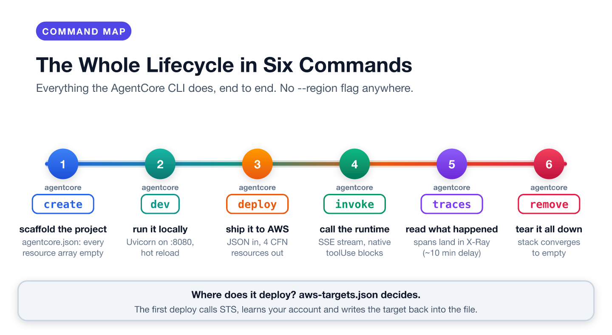
AgentCore 是一组面向 AI Agent 的托管运行时，九项托管服务覆盖托管、记忆、访问控制、工具集成、代码执行、浏览器自动化、质量与可观测。本文涉及其中两项：Runtime 和 Observability。
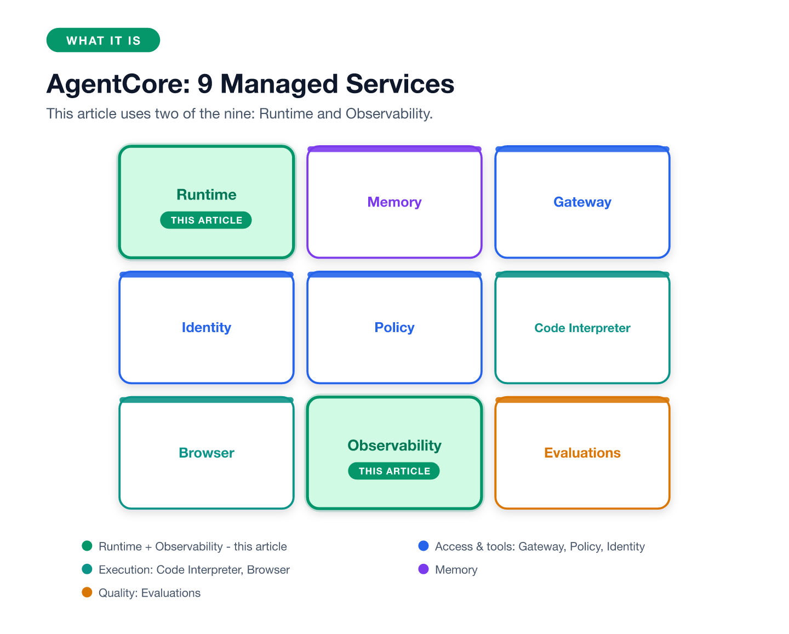
不是什么：
AgentCore 托管你的代码，加上一个 HTTP endpoint、一个 IAM 角色和一条 trace 管道。用过 ECS 或 Fargate 的读者会立刻感到差异：没有 Dockerfile、没有任务定义、没有 target group。
你写 Agent 代码，写两个 JSON 文件，CLI 生成其余一切，AWS 跑一个你永远不用看的 CloudFormation 栈。
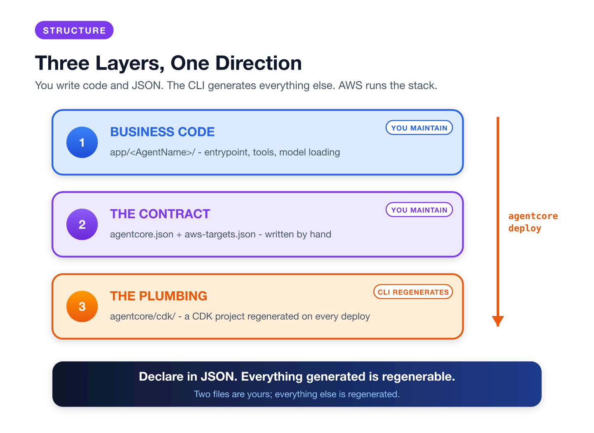
| 层 | 放什么 | 谁维护 |
|---|---|---|
| 业务代码 | app/<AgentName>/ 里的 Agent 入口 |
你 |
| 契约 | agentcore.json + aws-targets.json |
你，手写 |
| 管道 | agentcore/cdk/ 下的 CDK 工程 |
CLI，每次 deploy 重新生成 |
设计遵循一条原则：声明的资源在 JSON 里，CLI 生成的一切都可重新生成。
清单：
| 工具 | 实测版本 | 说明 | 自检 |
|---|---|---|---|
| Node.js | 24.x | CLI 要求 20+ | node --version |
| AgentCore CLI | 0.31.1 | 装法见下 | agentcore --version |
| AWS CLI | 2.x | 任意近期版本 | aws --version |
| uv | 0.11.9 | CLI 用它给模板 agent 建 Python 环境 | uv --version |
| Git | 2.39 | create 会在新项目里跑 git init |
git --version |
| Python | app venv 里是 3.12 | CodeZip 支持 3.10 至 3.14；runtime 目标版本是 CLI 的默认值，与本机解释器无关 | python3 -V |
| AWS 账号 | 任意 | 权限见下 | aws sts get-caller-identity |
| 区域 | us-east-1 | 全系列统一 | aws configure get region |
| Docker | 不需要 | 本系列统一 CodeZip 构建 | 不适用 |
安装 CLI 并设置区域：
npm install -g @aws/agentcore@latest
aws configure set region us-east-1
自检命令与预期输出：
node --version
# v24.14.0
uv --version
# uv 0.11.9
git --version
# git version 2.39.5
agentcore --version
# 0.31.1
aws sts get-caller-identity --query '[Account,Arn]' --output text
# 123456789012 arn:aws:iam::123456789012:user/yourname
aws configure get region
# us-east-1
aws bedrock list-foundation-models --region us-east-1 \
--query 'modelSummaries[?modelId==`deepseek.v3.2`].modelId' --output text
# deepseek.v3.2
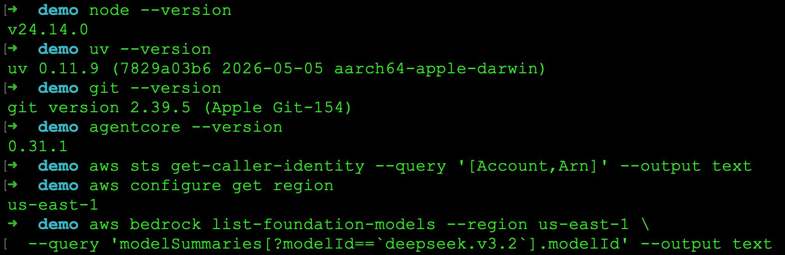
Runtime 的 IAM 角色。CLI 为 Runtime 自动生成 IAM 角色，策略含三组权限：bedrock:InvokeModel*（调模型）、logs:*（写 /aws/bedrock-agentcore/runtimes/ 下日志组）、xray:PutTraceSegments（上报 trace）。这是一份最小权限模板，可供后续复用。
已知问题：agentcore --version 报错但命令存在时，通常是被旧的 Python 包 bedrock-agentcore-starter-toolkit 遮蔽。pip uninstall bedrock-agentcore-starter-toolkit 解决。
agentcore create --name hello_agent --project-name helloagent \
--framework Strands --model-provider Bedrock --memory none --defaults
[done] Create helloagent/ project directory
[done] Prepare agentcore/ directory
[done] Initialize git repository
[done] Add agent to project
[done] Set up Python environment
Created:
helloagent/
app/hello_agent/ Python agent (Strands)
agentcore/ Config and CDK project
Project created successfully!
To continue, navigate to your new project:
cd helloagent
agentcore
命令产出三类文件：
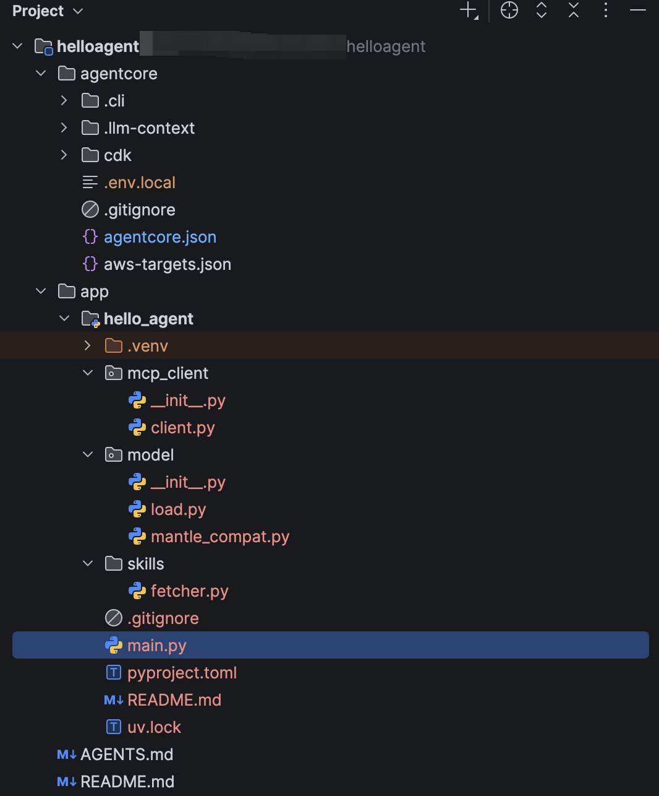
项目根目录得到 AGENTS.md、README.md 和一次 git init。agentcore/ 得到契约（agentcore.json）、部署目标（aws-targets.json）、放密钥的 .env.local 和内置 cdk/ 工程。app/hello_agent/ 得到 agent：main.py（入口）、model/ 包、pyproject.toml 和辅助包（mcp_client/、skills/）。契约把 codeLocation 指向 app/hello_agent/、entrypoint 指向 main.py；平台据此打包、部署和启动。
agentcore/ 里只有 agentcore.json 和 aws-targets.json 归你编辑，其余每次 deploy 重新生成。CLI 从当前目录向上查找同时含 agentcore/ 目录和 agentcore/agentcore.json 文件的那一层，缺一即报 No agentcore project found。
除 runtimes 外的资源数组初始为空，aws-targets.json 为 []，下一步来填。
部署定义（节选关键字段）：
{
"$schema": "https://schema.agentcore.aws.dev/v1/agentcore.json",
"name": "helloagent",
"version": 1,
"managedBy": "CDK",
"runtimes": [{
"name": "hello_agent",
"build": "CodeZip",
"entrypoint": "main.py",
"codeLocation": "app/hello_agent/",
"runtimeVersion": "PYTHON_3_14",
"networkMode": "PUBLIC",
"protocol": "HTTP",
"envVars": [{ "name": "MODEL_ID", "value": "deepseek.v3.2" }]
}],
"memories": [],
"knowledgeBases": [],
"agentCoreGateways": []
}
create 生成这个文件时除 runtimes 外的资源数组都为空；agentcore add（add agent、add memory、add gateway）往里塞条目。
runtime 块里四个字段错一个就部署失败：entrypoint（平台调用的文件）、codeLocation（app/hello_agent/）、build（CodeZip，即不用容器）、protocol（HTTP），其余有默认值。envVars 是 MODEL_ID 进代码的通道，换模型改 JSON 即可，不用动代码。
检查 model/load.py 是否从 MODEL_ID 环境变量读取模型，而不是写死 ID（生成模板有时默认用 Claude）：
import os
from strands.models.bedrock import BedrockModel
def load_model() -> BedrockModel:
model_id = os.environ.get("MODEL_ID", "deepseek.v3.2")
return BedrockModel(model_id=model_id)
部署前校验契约：
agentcore validate
# Valid
第二个文件决定部署位置：
[{ "name": "default", "account": "123456789012", "region": "us-east-1" }]
create 只写一个空数组。首次 deploy 时 CLI 调 STS 查明身份，把 account 和 region 回写。deploy、status、remove 都没有 --region 参数，这个文件是部署位置的唯一真相源。
在项目根目录执行：
agentcore deploy -y --target default
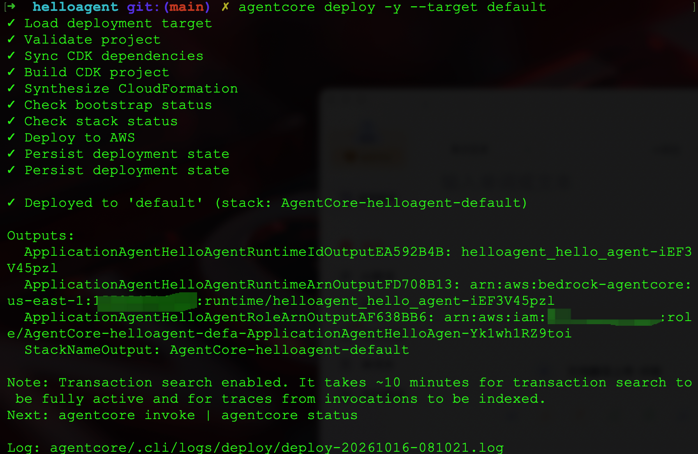
从命令到最后的勾，六件事顺序发生：
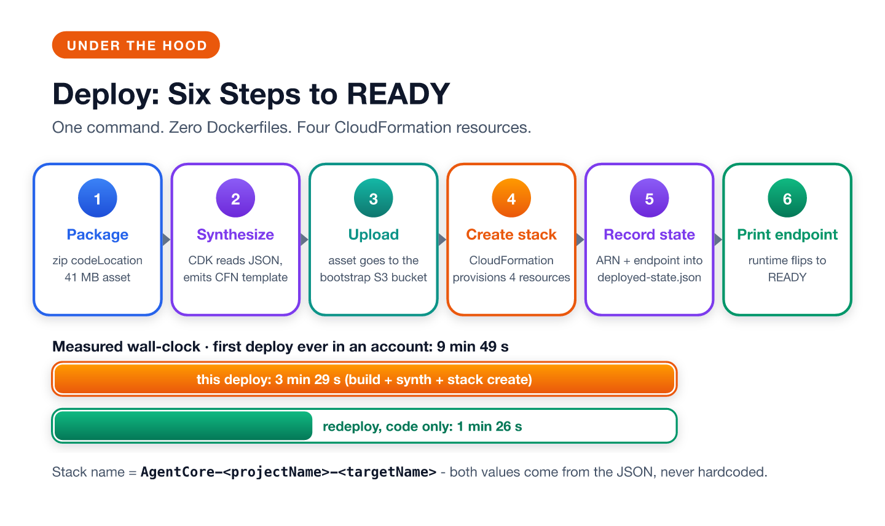
codeLocation 指向的目录加平台依赖压成一个资产包。Hello World 41 MB，本地 .venv 被排除，全程无镜像构建。node dist/bin/cdk.js），读两个 JSON，把模板产出到 cdk.out/。cdk bootstrap 每账号每区域一次性建好；没有这次 bootstrap，CDK 部署无处存放资产。agentcore/.cli/deployed-state.json。合成这步最能体现 schema-first 的本质。生成的 CDK app 没有任何项目知识：
// agentcore/cdk/bin/cdk.ts（生成工程原文）
async function main() {
const configRoot = path.resolve(process.cwd(), '..');
const configIO = new ConfigIO({ baseDir: configRoot });
const spec = await configIO.readProjectSpec(); // agentcore.json
const targets = await configIO.readAWSDeploymentTargets(); // aws-targets.json
...
}
生成的 CDK app 按路径读取 agentcore.json 和 aws-targets.json，本身不含项目逻辑，完全由这两个文件驱动。
实测耗时：这次部署端到端 3 分 29 秒。CLI 分步日志：构建 CDK 工程 25 秒、合成 CloudFormation 1 分 03 秒、建栈 1 分 51 秒。账号首次部署 9 分 49 秒，多出的是一次性 cdk bootstrap 和首轮 npm install。只改代码的重部署 1 分 26 秒，因为栈已存在，变的只有资产哈希。跑完用 agentcore status 验证，看到 Runtime: READY 即可。
agentcore dev -l 在本地 localhost:8080 跑同一个 app。模型调用仍走 Bedrock，需要凭证但不用部署。编辑 main.py 后热重载自动生效，无需重启。
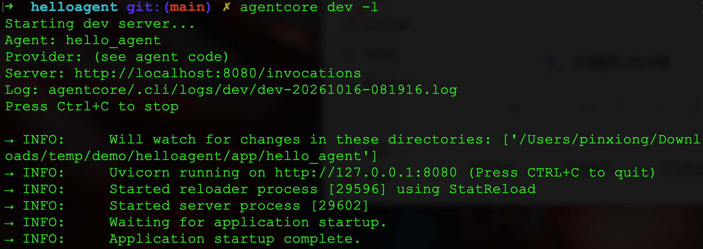
部署后的 Runtime 走数据面响应。CLI 封装如下：
agentcore invoke --prompt "What is 17 plus 25? Use the tool."
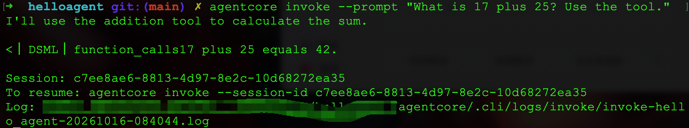
答案正确、工具确实被调用了，但回复里裹着模型脚手架：I'll use the addition tool 前导句和 <|DSML|>function_calls 标记出现在正式文本之前。这是模型行为，不是平台问题，「故障排查」一节给出修复办法。
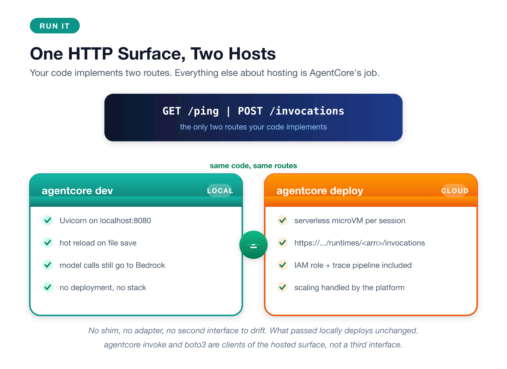
agentcore dev 和线上 Runtime 是同一个 app 的两种宿主：本地运行在 localhost:8080，线上是托管的 microVM，路由挂在 https://bedrock-agentcore.<region>.amazonaws.com/runtimes/<runtime-arn>/invocations。两者暴露同一组路由（/ping、/invocations）；路由、扩缩容、TLS 都在平台侧，代码无需感知自己跑在哪一侧。agentcore invoke 是线上 /invocations 的 CLI 客户端。
单次调用成本：DeepSeek V3.2 在 us-east-1 的价格是输入 $0.62/M、输出 $1.85/M token。两轮调用 846 输入 + 82 输出，模型费约 $0.0007，Runtime 计算约 $0.0002。教学级 Agent 的基础设施账单约等于零。
Runtime 对代码只发两种请求：GET /ping 健康检查，POST /invocations 干活。BedrockAgentCoreApp 是薄适配器，把路由接到异步生成器上：
from bedrock_agentcore.runtime import BedrockAgentCoreApp
from strands import Agent, tool
app = BedrockAgentCoreApp()
@tool
def add_numbers(a: int, b: int) -> int:
"""Return the sum of two numbers."""
return a + b
@app.entrypoint
async def invoke(payload, context):
session_id = getattr(context, "session_id", "default-session")
agent = get_or_create_agent(session_id)
async for event in agent.stream_async(extract_prompt(payload)):
yield event
三个设计要点：
context.session_id 是唯一需要你管理的状态键。每个 session 独立 microVM，扩缩容平台管。一次线上 invoke 在 X-Ray 里产生这棵 span 树，token 数也是实测的：
agentcore traces list # 调用后 2 至 3 分钟能查到最近几次 trace
agentcore traces get <trace-id>
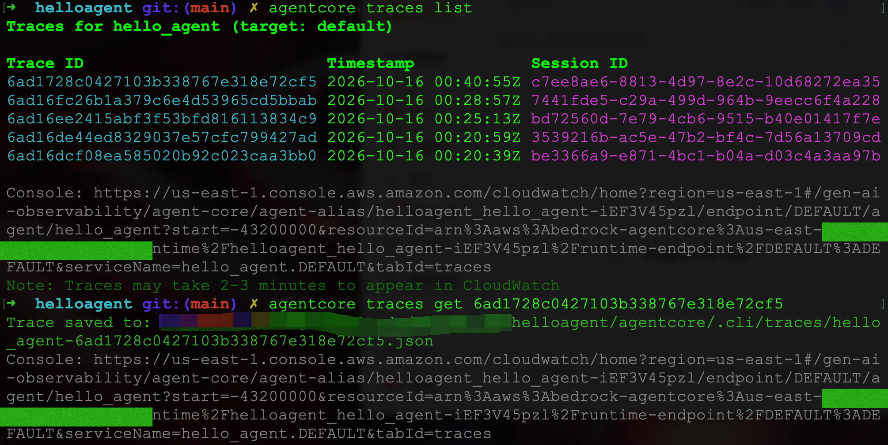
invoke_agent Strands Agents gen_ai.agent.tools=["add_numbers"] tokens=902
├── execute_event_loop_cycle (cycle 1)
│ ├── execute_tool add_numbers gen_ai.tool.status=success span_kind=TOOL
│ └── chat deepseek.v3.2 (LLM, 435 tokens)
│ └── chat deepseek.v3.2 (Bedrock) finish_reason=tool_use
└── execute_event_loop_cycle (cycle 2)
└── chat deepseek.v3.2 (LLM, 467 tokens)
└── chat deepseek.v3.2 (Bedrock) finish_reason=end_turn
不用读框架源码，这棵树就讲清了 Agent Loop：每轮模型往返一个 cycle，工具调用是 cycle 内独立的 span，第二个 cycle 消费工具结果。
两个实测出来的坑：
execute_tool span 只有线上 Runtime 会产出，要断言它必须打线上。在项目根目录执行：
agentcore remove all -y # 清空 agentcore.json 的资源数组
agentcore deploy -y # 栈收敛到空
agentcore status # 应列不出任何已部署资源
remove all 只改 JSON，不触 AWS。真正删 Runtime、IAM 角色和栈的是后面的 deploy。两样东西故意保留：CDK bootstrap 栈（CDKToolkit）和资产桶，后续部署复用；/aws/bedrock-agentcore/runtimes/ 下的日志组，装的是刚读的 trace。账号弃用时手动删。AgentCore 按用量计费，项目挂着不动不产生费用。
cdk.out 弄挂下一次 deploy。CLI 每次 synth 前删 cdk.out，残留状态导致 synth 报 Subprocess exited with error 1。手动跑 cdk synth 是通的，说明工程没坏。rm -rf agentcore/cdk/cdk.out 解决。name 字段变成 CloudFormation 的 Logical ID，改名不是重命名，是删旧建新。<thinking> 块。绕开 Strands 直调 converse_stream 验证过：是模型行为不是框架 bug。修复是在入口加流式安全过滤器：拦下标记前缀，收到 messageStart 就对每条 assistant 消息重置一次；官方 01-features/06-observe 样例有参考实现。--region 猜测都报 unknown option，targets 文件说了算。MODEL_ID 没有正确从 envVars 加载，Strands SDK 默认使用 Claude 模型。不支持 Anthropic 模型的地区会报 Access to Anthropic models is not allowed from unsupported countries。检查 agentcore.json 的 envVars 是否包含 MODEL_ID，以及 model/load.py 是否将其显式传给 BedrockModel 构造函数，不要依赖 SDK 默认值。在 AgentCore 里，基础设施不是你维护的代码，而是编译的代码。